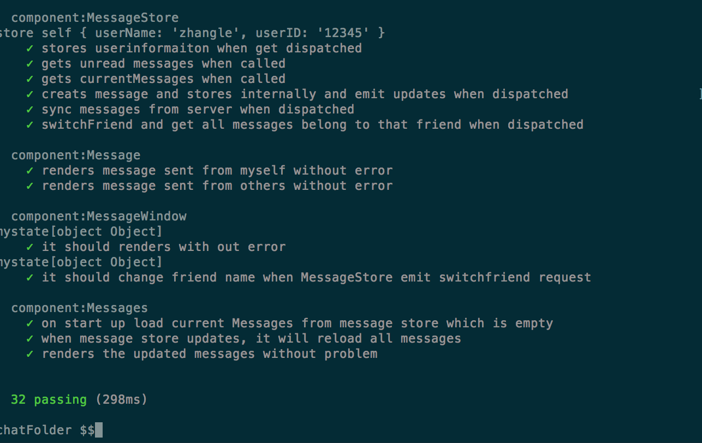
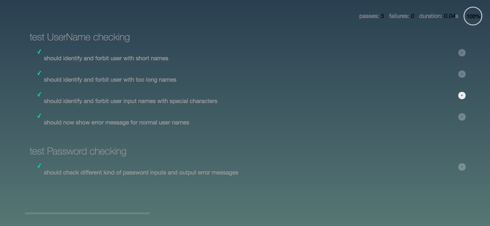

Test and Validation
Overview
The test consists of 2 parts, react component tests and static page tests
React Component Test
The tools used to test react components are Enzyme ,Sinon,Expect and Proxyquire.
The tools for performing static page tests are mocha and chai.
Enzyme is used to mount react components. Sinon has tools like spy and stub that can monitor the component function for calling events and parameters used. Proxyquire can replace the speci testing and responsfied import module of the component to make it more isolated for to events as we intended. Expect is used to compare expected results with actual results.
Totally 32 tests have been ran to test all react components in chatting function,each of which passed without any error.
The chatting function is designed using a flux pattern, in which emitters are used to store information,and emit changes for view components to update, a dispatcher are used to diaspatch what ever events and data to emitters and update the data storege of emitters, view components can show and render information like firend list and messages, and can also respond to user events like sending messages and use dispatcher to update local storages.
So the tests are divided into 3 groups:
For normal view components, test uses Enzyme to mount components and can also simuate user inputs or events and check internal functions called times and state change.
For testing dispatcher functions, we register a spy function to the register and call different dispatch functions and monitor whehter the dispactched events and data are heard by the registered group.
Static Page Test
The testing of static page is done using Mocha and Chai.
Mocha is suitable for in page test, and chai is used to compare results.
Login page and register page are tested for username and password authenticaion on client side, the test shows every invalid usernames or passwords are identified and responded with expected error messages.
command to run for all react component tests mocha --compilers js:babel-register --require ignore-styles --require ./test/helpers.js --require ./test/dom.js ./test/*.js
Static page tests can be run by directly opening following files in /test/page_test folder registerTest.html loginTest.html
Following are snapshots for both component tests and page tests
Component test results:
Paga test results:
